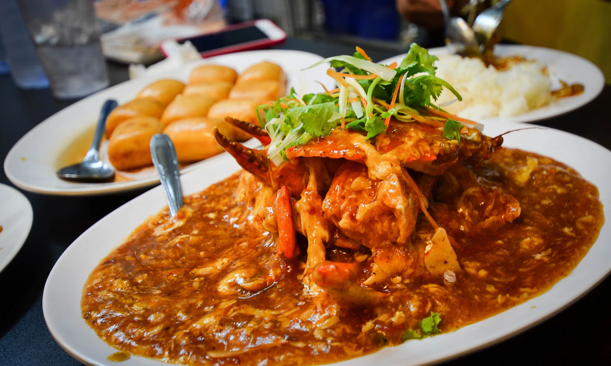

Though most crabs live near bodies of water or in the water, only a select few can actually swim
What Are Crabs?
Crabs are Crustaceans that live in bodies of oceanwater, freshwater or on land, They belong under the Infraorder Brachyura, which in short tail in greek, meaning they crabs have tails. Crabs are generally cover with a thick exoskeleton made from chitin, which is used in the exoskeleton of insects as well. They grow by molding their shells as the shell does not change in size, so periodically the shed the shell to make brand new bigger shells to fit them as they grow, like clothes for us when we grow older. They also have a pair of pincers that are used to hunt for food or defend themselves from predators.


×

How Crabs are in the wild?
In the wild, crabs exhibit a wide range of behaviors and interactions with their environment. Their specific behavior and lifestyle can vary depending on the species of crab and the type of habitat they inhabit, whether it's marine (saltwater) or freshwater environments. Here are some common characteristics and behaviors of crabs in the wild:
Foraging
Crabs use their pincers to forage or hunt for food, their pincers grab onto anything that is within range and applies force onto the target. Some just grab their prey and start consumption while others use their crushing claw to break the shell or bones to feast onto the soft meat.
Burrowing and Molting
Crabs require molting as since they are Crustaceans, they are unable to grow their shell as it is made from non organic matter that is hard to break, so it has to molt away its old shell and make a new one that is bigger for it to grow. After it finishes the molting process, it is at its weakest as the shell of the newly molted crab has not hardened yet, making it soft and easy prey to predators, this is why crabs burrow underground. Crabs burrow underground as a defense mechanism to hide from predators or ambush unsuspecting prey, they are able to burrow underground by using their hindlegs and claws to dig the sand or ground out and pull themselves deeper into the substrate.
Reproduction

The Male Crab engage in various courtship behaviors to attract female mates. These courtship displays can include waving their claws, performing dance-like movements, producing sounds, or releasing pheromones.
Fun facts about crabs!
There are two distinct types of crabs: true crabs and false crabs, true crabs belong under the Brachyurans Infraorder, they will always have a very short abdomen and 10 legs. False Crabs on the order hand has belongs under the Anomuran Infraorder, they have a longer abdominal section with fewer walking legs compared to the true ones. Some examples are Hermit crabs and King Crabs.
All True Crabs have 10 legs, 8 for walking and the other 2 being their pincers
Their legs are positioned in such a way that they can only move sideways, making them ideal for navigating the rocky terrain of the ocean floor and evade predators by changing direction quickly
Crabs are omnivorous creatures, in the wild their diet consists of small fish, algae and other crabs. However, in captivity crabs can eat numerous food that we humans eat, like vegetables, meat and fruits. They can also eat snacks like chips but it's not recommanded as it lacks nutrients and is generally unhealthy for us or them.
Crabs have the ability to regenerate missing limbs. They first store up a ton of energy within their body, then they expand it out to during the molding process to regrow their limbs, this spans across multiple molting section and it will not be exactly the same as the original limb. It is also only found in certain species of crab so not all crabs have this healing factor.
Top 3 Crab delicacies in Singpore!
#1 Chilli Crab

Chilli crab is a popular seafood dish among locals and foreigners in Singapore, and consists of mud crabs deep-fried in a sweet, savoury and spicy gravy.1 It has been referred to in various food publications as Singapore’s national seafood dish or even Singapore’s national dish.
#2 Crab Bee Hoon
Crab Bee Hoon is a Singaporean rice vermicelli dish with whole mud crab served in a claypot and aromatic milky broth. Bee Hoon or rice noodle has the ability to soak up the stock from any dish and that’s one of the main reasons it is so popular among the locals!
#3 Salted Egg Crab

Salted Egg crab is a popular seafood dish among locals and foreigners in Singapore too, similar to the chilli crab, the salted egg crab consists of mud crabs deep-fried in a batter with butter and salted egg yolk